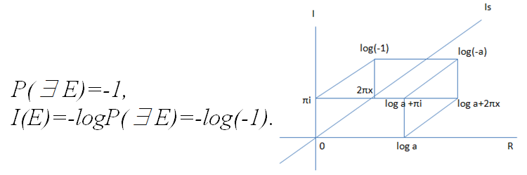

情報理論のための物理基礎
シャノンの情報理論が物理学とどのような縁があるのか，説明する人は少ない．情報量はわからなさを減らすものであり，事象の確率をlogにとって負にすれば情報量の式になる．
logといえばフェヒナーの法則がある．刺激量が多いほど感覚量が多いとする．現代のことばでいえば，情報量の多い刺激ほどニューロンが興奮する．感覚量とは単位時間当たりの伝達量なのだろう．わからなかったことが一気にわかったとき，ニューロンが興奮し，その情報が持つ刺激を伝達し，大きく深く知的な感覚をもたらす．これはしばしばその脳の持ち主を危険ともいえる状態にする．アルキメデスは裸で外に出た．
情報理論で発見を定義してみる．起こる事象を，事象が起きる確率ではなく，事象が起こりうる確率として，半ば経験的な知恵として，わかったことだと．法則として知られていることではなく，まだ法則になっていない見過ごされていたものを，法則として見つける．起こりうる事象が起こるとの情報をつかんで，実際に起きたとき，そこからわかった事実によって，その事象について法則を発見することだと．
このように情報量をめぐる確率には，事象が起きる確率のほかに，事象が起こりうる確率があると便利である．起こるかどうかさえわからないけれども，きっと起こるにちがいない事象は，確率が負となる．勘の領域はまだ起きていないので，確率に負がつく．情報量を多く蓄えたうえでの勘は，負の値が大きいので，発見した場合の興奮も大きい．
すでに知られている法則は，確率が０か１で情報はゼロである．仮に知られている法則のみからなる事象集合を考えた場合，知っているかどうかはブール代数で表現できる．コンピューターに既知の方程式を詰めこんで解を出す場合がそうである．コンピューターに発見させようとするならば，もっともらしく浅くない勘を，式で表現して計算させていけば法則をはじき出せる．勘を段階的に深くしていくアルゴリズムは，潜在的な情報量を多く保てればよいだろう．
物理学における情報量とは，物理学者が情報を探究した結果，法則を発見してどれだけ興奮したかを表す量となる．興奮の量が大きいほど，まだほとんど知られていない法則であるから，発表せずに隠し続けても興奮冷めやらぬ時間を過ごせるだろう．
毎日情報を得ていくと，だんだんと情報量が少ない情報のほうが多くなる．だからこそ，発見は今後も続くにちがいない．神は人間の発見活動をほほ笑んで見守っている．人間に万物のすべてをわかられるその時まで．